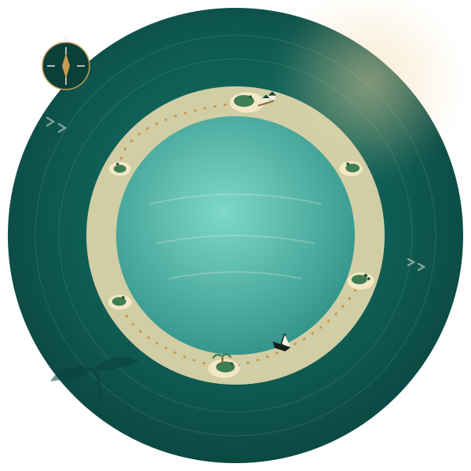

Twenty-six atolls.
One unhurried journal.
Atoll Journal is a small, independent guide written for travelers who want more than a brochure — honest notes on where to stay, where to dive, and how the islands actually feel once the boat engine cuts out.

Three ways into the atolls
Everything in this journal folds into one of three sections. Pick the one that matches your trip, or read them all before you pack.
Stays
From reef-edge guesthouses to overwater villas — where to actually sleep, and what you're paying for.
Dive
Channels, cleaning stations and wrecks — logged, rated, and matched to the season you're traveling in.
Journal
Dispatches, field notes and the occasional argument about the best time of year to visit.
Trip Planner
Tell it how long you're staying, what draws you here, and what kind of trip you're after. It sketches a day-by-day plan and a ballpark cost — calculated live, in your browser, no page reload.
Your personalized itinerary will appear here — set your nights, style and budget, then chart it.
Latest from the Journal
Short dispatches from the atolls — read the full archive on the Journal page.
Reading the Reef: A Beginner's Guide to Maldivian Coral
What you're actually looking at on your first snorkel — and why it matters where you put your fins.
The Last Boat Builders of Alifushi
On the island still building dhonis by hand — and what happens to the craft when the orders slow down.
Five Breakfasts Worth Waking Up For
A short, opinionated list of the mas huni plates and roshi stalls we keep going back to.